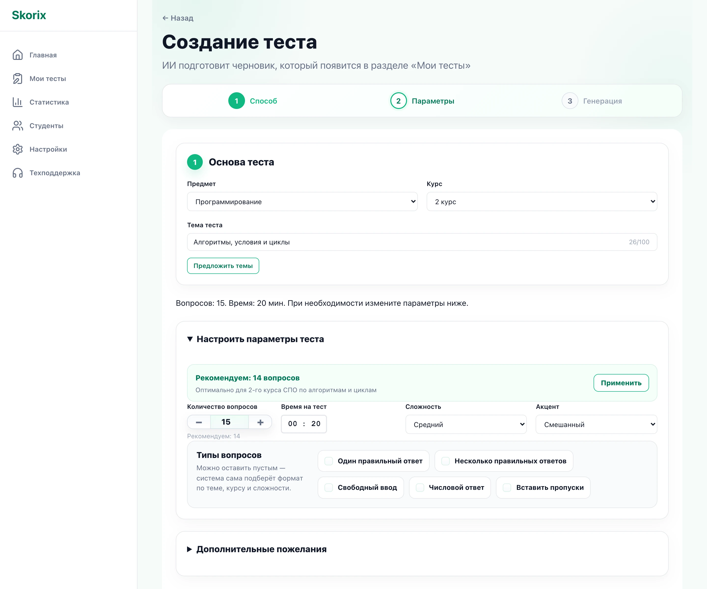
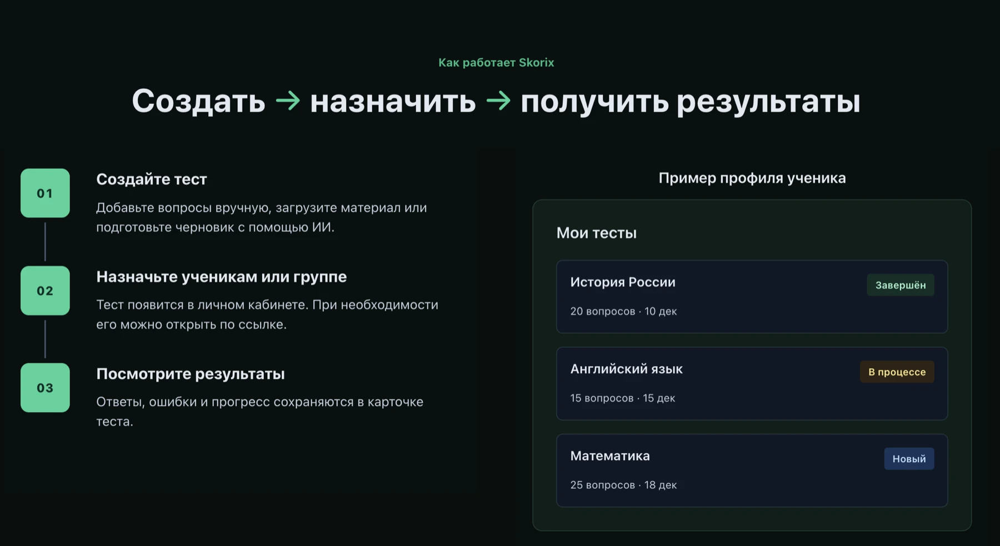
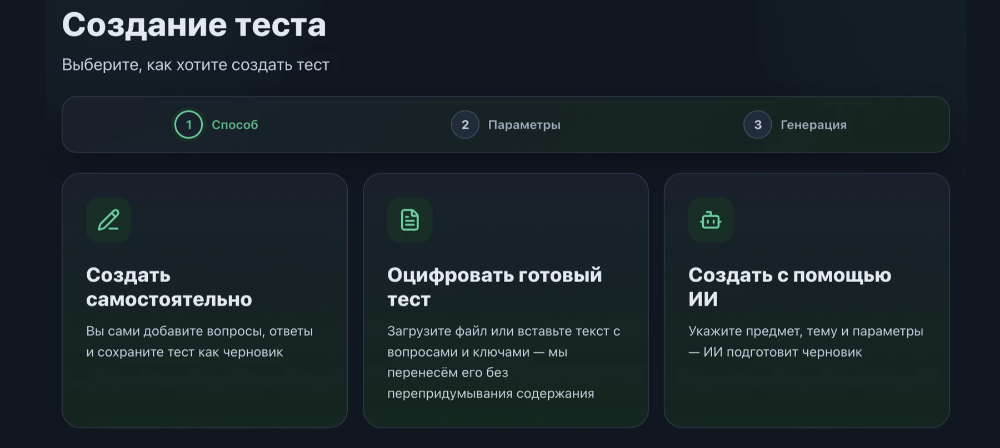
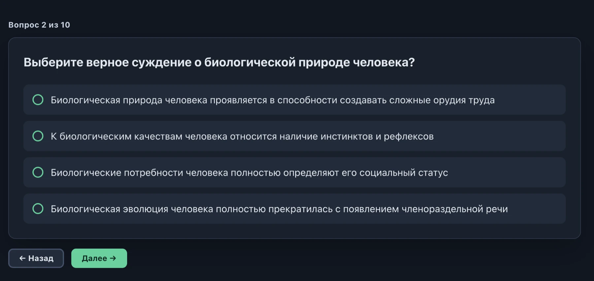
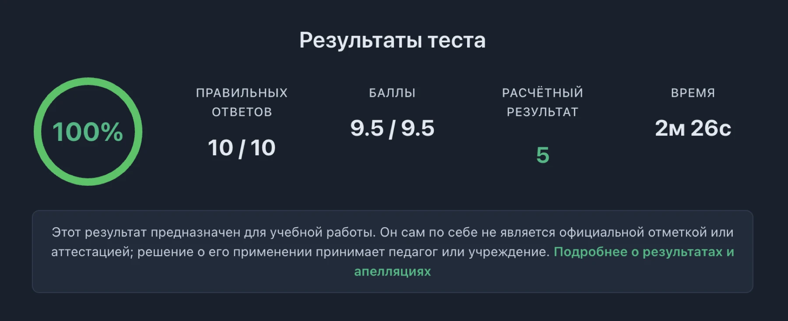

01/03
Skorix
Skorix объединяет подготовку тестов, выдачу заданий и просмотр результатов в одном пространстве — для педагогов, учащихся и образовательных организаций.

Что это за проект
Skorix — инструмент для педагогов, который объединяет подготовку тестов, выдачу заданий и просмотр результатов. Он предназначен для учителей школ, преподавателей колледжей и вузов, репетиторов и преподавателей курсов.
Учащиеся работают со своей частью платформы: получают задания, проходят тесты и знакомятся с доступными результатами. Для образовательных организаций предусмотрены сценарии работы с учреждениями, классами, группами и участниками.
Какую задачу решает
Подготовка и проведение тестирования обычно состоит из нескольких отдельных действий: составить вопросы, оформить материал, передать учащимся, собрать ответы и разобраться в результатах.
Skorix объединяет эти действия в одном продукте. При этом педагог сохраняет контроль над содержанием заданий и правилами работы с результатами.
Что реализовано
- Создание тестов — вручную, из готового материала или с помощью ИИ.
- Редактирование вопросов, вариантов ответов и параметров теста перед публикацией.
- Выдача заданий ученикам, студентам, классам и группам.
- Отдельный пользовательский путь прохождения теста для учащегося.
- Просмотр результатов, ошибок и статистики.
- Роли пользователей и работа с образовательными организациями.
В чём сложность разработки
Основная сложность — согласовать поведение разных частей продукта. Созданный педагогом тест должен корректно отображаться учащемуся, ответы — сохраняться, а результат — рассчитываться по заданным правилам.
ИИ здесь — часть рабочего процесса: сгенерированный материал остаётся редактируемым, понятным и доступным для проверки педагогом. Отдельная задача — разграничение доступа, чтобы пользователи с разными ролями не получали чужие данные или административные возможности.
Что кейс говорит о KDSV
- Проектирование сложных пользовательских сценариев с несколькими ролями.
- Разработка клиентской и серверной частей.
- Интеграция ИИ в прикладной продукт.
- Работа со структурированными данными и статистикой.
- Развитие большой системы со взаимосвязанными функциями.
Материалы
Экраны Skorix



